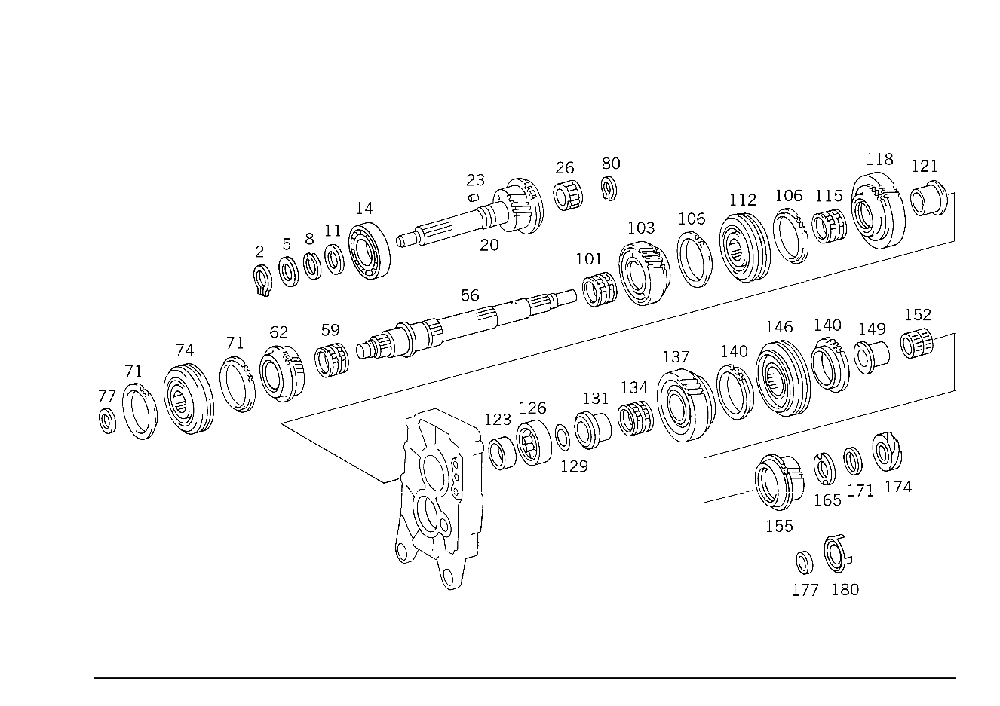

| № | Артикул | Название | Кол. | Примечание | Ограничение |
|---|---|---|---|---|---|
| 2 | N 000471 035000 | - Стопорное кольцо | 1 | ||
| 5 | A 000 262 06 39 | - СТОПОРНОЕ КОЛЬЦО | 1 | ||
| 8 | A 000 262 04 94 | - Пруж. стопорное кольцо | NB | 35X2.0 | |
| 8 | A 000 262 05 94 | - Пруж. стопорное кольцо | NB | 35X2.1 | |
| 8 | A 000 262 06 94 | - Пруж. стопорное кольцо | NB | 35X2.2 | |
| 8 | A 000 262 07 94 | - Пруж. стопорное кольцо | NB | 35X2.3 | |
| 11 | A 000 262 06 78 | - ШАЙБА | 1 | [402] БОЛЬШЕ НЕ ПОСТАВЛЯЕТСЯ | |
| 14 | A 004 981 01 25 | - ШАРИКОПОДШИПНИК | 1 | ||
| 20 | A 000 260 19 20 | - ПРИВОДНОЙ ВАЛ | - | ||
| 20 | A 000 260 20 20 | - ПРИВОДНОЙ ВАЛ | - | ||
| 20 | A 000 260 31 20 | - ПРИВОДНОЙ ВАЛ | 1 | [402] БОЛЬШЕ НЕ ПОСТАВЛЯЕТСЯ | |
| 23 | A 000 981 33 86 | - РОЛИК | 1 | [402] БОЛЬШЕ НЕ ПОСТАВЛЯЕТСЯ | |
| 26 | A 010 981 75 10 | - Игольчатый подшипник | 1 | ||
| 56 | A 000 262 05 01 | - ВТОРИЧНЫЙ ВАЛ | 1 | [402] БОЛЬШЕ НЕ ПОСТАВЛЯЕТСЯ | |
| 59 | A 010 981 77 10 | - ПОДШИПНИК ИГОЛЬЧАТЫЙ | 1 | ШЕСТЕРНЯ ТРЕТЬЕЙ ПЕРЕДАЧИ | |
| 59 | A 010 981 78 10 | - ПОДШИПНИК ИГОЛЬЧАТЫЙ | 1 | ШЕСТЕРНЯ ТРЕТЬЕЙ ПЕРЕДАЧИ | |
| 59 | A 012 981 03 10 | - ПОДШИПНИК ИГОЛЬЧАТЫЙ | 1 | ШЕСТЕРНЯ ТРЕТЬЕЙ ПЕРЕДАЧИ [402] БОЛЬШЕ НЕ ПОСТАВЛЯЕТСЯ | |
| 62 | A 000 262 42 13 | - ШЕСТЕРНЯ | - | ||
| 62 | A 000 262 67 13 | - ШЕСТЕРНЯ | 1 | ТРЕТЬЯ ПЕРЕДАЧА [402] БОЛЬШЕ НЕ ПОСТАВЛЯЕТСЯ | |
| 71 | A 000 262 21 34 | - Кольцо синхронизатора | 2 | ТРЕТЬЯ И ЧЕТВЁРТАЯ ПЕРЕДАЧА | |
| 74 | A 000 262 46 23 | - СКОЛЬЗ. МУФТА СИНХРОНИЗ. | 1 | ТРЕТЬЯ И ЧЕТВЁРТАЯ ПЕРЕДАЧА | |
| 77 | A 000 262 16 78 | - Диск | NB | 28X37X4.0 | |
| 77 | A 000 262 08 78 | - Диск | NB | 28X37X3.9 | |
| 77 | A 000 262 09 78 | - Диск | NB | 28X37X3.8 | |
| 77 | A 000 262 10 78 | - Диск | NB | 28X37X3.7 | |
| 80 | A 000 262 08 94 | - Пруж. стопорное кольцо | 1 | ||
| 101 | A 010 981 77 10 | - ПОДШИПНИК ИГОЛЬЧАТЫЙ | 1 | ШЕСТЕРНЯ ВТОРОЙ ПЕРЕДАЧИ | |
| 101 | A 010 981 78 10 | - ПОДШИПНИК ИГОЛЬЧАТЫЙ | 1 | ШЕСТЕРНЯ ВТОРОЙ ПЕРЕДАЧИ | |
| 101 | A 012 981 03 10 | - ПОДШИПНИК ИГОЛЬЧАТЫЙ | 1 | ШЕСТЕРНЯ ВТОРОЙ ПЕРЕДАЧИ [402] БОЛЬШЕ НЕ ПОСТАВЛЯЕТСЯ | |
| 103 | A 000 262 33 12 | - ШЕСТЕРНЯ | 1 | ВТОРАЯ ПЕРЕДАЧА [402] БОЛЬШЕ НЕ ПОСТАВЛЯЕТСЯ | |
| 106 | A 000 262 23 34 | - КОЛЬЦО СИНХРОНИЗАТОРА | 1 | ПЕРВАЯ ПЕРЕДАЧА | |
| 106 | A 000 262 21 34 | - Кольцо синхронизатора | 1 | ВТОРАЯ ПЕРЕДАЧА | |
| 112 | A 000 262 47 23 | - СКОЛЬЗ. МУФТА СИНХРОНИЗ. | 1 | ПЕРВАЯ И ВТОРАЯ ПЕРЕДАЧА [402] БОЛЬШЕ НЕ ПОСТАВЛЯЕТСЯ | |
| 115 | A 010 981 77 10 | - ПОДШИПНИК ИГОЛЬЧАТЫЙ | - | [415] ПРИМЕЧ. ПО ЗАМЕНЕ ПРИМЕНИМО ТОЛЬКО ДЛЯ СТОЯЩИХ РЯДОМ ПОЗИЦИЙ | |
| 115 | A 012 981 03 10 | - ПОДШИПНИК ИГОЛЬЧАТЫЙ | 1 | ШЕСТЕРНЯ ПЕРВОЙ ПЕРЕДАЧИ [402] БОЛЬШЕ НЕ ПОСТАВЛЯЕТСЯ | |
| 115 | A 010 981 78 10 | - ПОДШИПНИК ИГОЛЬЧАТЫЙ | - | [415] ПРИМЕЧ. ПО ЗАМЕНЕ ПРИМЕНИМО ТОЛЬКО ДЛЯ СТОЯЩИХ РЯДОМ ПОЗИЦИЙ | |
| 115 | A 012 981 04 10 | - ПОДШИПНИК ИГОЛЬЧАТЫЙ | 1 | ШЕСТЕРНЯ ПЕРВОЙ ПЕРЕДАЧИ | |
| 118 | A 000 262 64 11 | - ШЕСТЕРНЯ | 1 | ПЕРВАЯ ПЕРЕДАЧА [402] БОЛЬШЕ НЕ ПОСТАВЛЯЕТСЯ | |
| 118 | A 000 262 71 11 | - ШЕСТЕРНЯ | 1 | ПЕРВАЯ ПЕРЕДАЧА [402] БОЛЬШЕ НЕ ПОСТАВЛЯЕТСЯ | |
| 121 | A 000 262 26 50 | - втулка | 1 | ШЕСТЕРНЯ ПЕРВОЙ ПЕРЕДАЧИ | |
| 123 | A 000 262 01 67 | - Кольцо | 1 | ФЛАНЕЦ ПРОМЕЖУТОЧНЫЙ | |
| 126 | A 004 981 96 01 | - Подшипник с цил. роликами | 1 | ФЛАНЕЦ ПРОМЕЖУТОЧНЫЙ | |
| 129 | A 000 262 11 78 | - Диск | NB | 35X45X0.1 | |
| 129 | A 000 262 12 78 | - ШАЙБА | NB | 35X45X0.2 | |
| 131 | A 000 262 26 50 | - втулка | 1 | ШЕСТЕРНЯ ПЕРЕДАЧИ ЗАДНЕГО ХОДА | |
| 134 | A 010 981 77 10 | - ПОДШИПНИК ИГОЛЬЧАТЫЙ | 1 | ШЕСТЕРНЯ ПЕРЕДАЧИ ЗАДНЕГО ХОДА | |
| 134 | A 010 981 78 10 | - ПОДШИПНИК ИГОЛЬЧАТЫЙ | 1 | ШЕСТЕРНЯ ПЕРЕДАЧИ ЗАДНЕГО ХОДА | |
| 134 | A 012 981 03 10 | - ПОДШИПНИК ИГОЛЬЧАТЫЙ | 1 | ШЕСТЕРНЯ ПЕРЕДАЧИ ЗАДНЕГО ХОДА [402] БОЛЬШЕ НЕ ПОСТАВЛЯЕТСЯ | |
| 137 | A 000 263 03 33 | - ШЕСТЕРНЯ ОБРАТНОГО ХОДА | 1 | ПЕРЕДАЧА ЗАДНЕГО ХОДА [402] БОЛЬШЕ НЕ ПОСТАВЛЯЕТСЯ | |
| 140 | A 000 262 21 34 | - Кольцо синхронизатора | 2 | 5\-АЯ ПЕРЕДАЧА И ПЕРЕДАЧА ЗАДН. ХОДА | |
| 146 | A 000 262 45 23 | - СКОЛЬЗ. МУФТА СИНХРОНИЗ. | 1 | 5\-АЯ ПЕРЕДАЧА И ПЕРЕДАЧА ЗАДН. ХОДА | |
| 149 | A 000 262 27 50 | - ВТУЛКА | 1 | ||
| 152 | A 010 981 76 10 | - ПОДШИПНИК ИГОЛЬЧАТЫЙ | - | ||
| 152 | A 012 981 02 10 | - ПОДШИПНИК ИГОЛЬЧАТЫЙ | 1 | ШЕСТЕРНЯ ПЯТОЙ ПЕРЕДАЧИ | |
| 155 | A 000 262 32 15 | - ШЕСТЕРНЯ | - | ||
| 155 | A 000 262 38 15 | - ШЕСТЕРНЯ | 1 | ПЯТАЯ ПЕРЕДАЧА [402] БОЛЬШЕ НЕ ПОСТАВЛЯЕТСЯ | |
| 165 | A 000 262 13 78 | - ШАЙБА | 1 | [402] БОЛЬШЕ НЕ ПОСТАВЛЯЕТСЯ | |
| 177 | A 000 262 02 67 | - КОЛЬЦО | 1 | (ОПОРНАЯ ШАЙБА) [402] БОЛЬШЕ НЕ ПОСТАВЛЯЕТСЯ | |
| 180 | A 123 264 01 76 | - Импульсный диск | 1 | ПРИВОД СПИДОМЕТРА | |
| 200 | A 000 260 10 24 | - ПРОМЕЖУТОЧНЫЙ ВАЛ | 1 | [402] БОЛЬШЕ НЕ ПОСТАВЛЯЕТСЯ | |
| 200 | A 000 260 11 24 | - ПРОМЕЖУТОЧНЫЙ ВАЛ | - | ||
| 200 | A 000 260 18 24 | - ПРОМЕЖУТОЧНЫЙ ВАЛ | 1 | [402] БОЛЬШЕ НЕ ПОСТАВЛЯЕТСЯ | |
| 203 | A 004 981 95 01 | - Подшипник с цил. роликами | 1 | ПРОМЕЖУТОЧНЫЙ ВАЛ, СПЕРЕДИ | |
| 206 | A 000 261 01 76 | - ШАЙБА | 1 | ПРОМЕЖУТОЧНЫЙ ВАЛ, СПЕРЕДИ [402] БОЛЬШЕ НЕ ПОСТАВЛЯЕТСЯ | |
| 209 | A 000 261 06 76 | - Диск | NB | ПРОМЕЖУТОЧНЫЙ ВАЛ, СПЕРЕДИ 50X62X0.3 | |
| 209 | A 000 261 07 76 | - Диск | NB | ПРОМЕЖУТОЧНЫЙ ВАЛ, СПЕРЕДИ 50X62X0.4 | |
| 209 | A 000 261 08 76 | - ШАЙБА | NB | ПРОМЕЖУТОЧНЫЙ ВАЛ, СПЕРЕДИ 50X62X0.5 | |
| 212 | A 004 981 96 01 | - Подшипник с цил. роликами | 1 | ПРОМЕЖУТОЧНЫЙ ВАЛ, СЗАДИ | |
| 215 | A 000 263 20 15 | - ШЕСТЕРНЯ | - | ||
| 215 | A 000 263 21 15 | - ШЕСТЕРНЯ | 1 | ПЯТАЯ ПЕРЕДАЧА | |
| 218 | A 004 981 94 01 | - ПОДШ. С ЦИЛ. РОЛИКАМИ | 1 | [402] БОЛЬШЕ НЕ ПОСТАВЛЯЕТСЯ | |
| 218 | A 005 981 76 01 | - ПОДШ. С ЦИЛ. РОЛИКАМИ | 1 | ||
| 230 | A 000 263 12 30 | - ОСЬ ШЕСТЕРНИ ЗАДНЕГО ХОДА | 1 | ШЕСТЕРНЯ ОБРАТНОГО ХОДА [402] БОЛЬШЕ НЕ ПОСТАВЛЯЕТСЯ | |
| 236 | A 010 981 75 10 | - Игольчатый подшипник | 2 | ||
| 245 | A 000 263 04 33 | - ШЕСТЕРНЯ ОБРАТНОГО ХОДА | 1 | [402] БОЛЬШЕ НЕ ПОСТАВЛЯЕТСЯ | |
| 254 | A 000 263 02 76 | - ШАЙБА | 1 | ||
| 254 | A 000 262 17 78 | - ШАЙБА | NB | 20X28X0.1 | |
| 254 | A 000 262 18 78 | - ШАЙБА | NB | 20X28X0.3 | |
| 257 | A 000 263 01 76 | - ШАЙБА | 1 | (ОПОРНАЯ ШАЙБА) | |
| 260 | N 000471 020001 | - Стопорное кольцо | 1 | ||
| 263 | N 000137 010201 | - Пружинная шайба | 1 | ОСЬ ШЕСТЕРНИ ЗАДНЕГО ХОДА НА КОРПУСЕ КП | |
| 266 | N 000933 010105 | - Винт | - | ||
| 266 | N 304017 010019 | - Винт с 6-гранной головкой | 1 | ОСЬ ШЕСТЕРНИ ЗАДНЕГО ХОДА НА КОРПУСЕ КП; M10X25 |
Позиций: 83 · подписано на схемах: 83 · колесо — плавный зум в курсор, перетаскивание — пан, двойной клик — зум, клик по артикулу — скопировать.